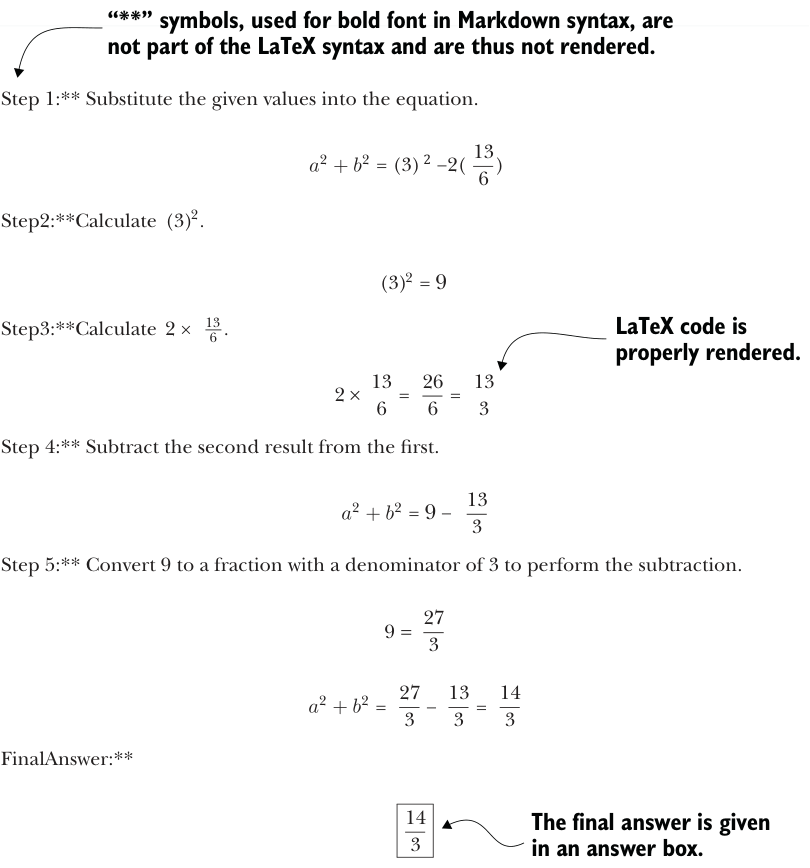
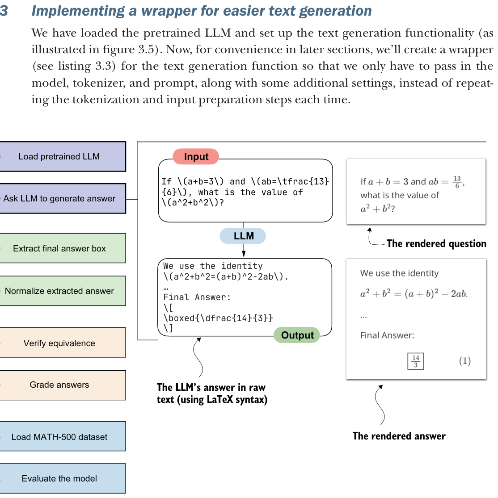

3.2Loading a pretrained model to generate text
In this section, we begin implementing the verifier by loading the pretrained LLM introduced in the previous chapter and configuring it to generate answers. This will lay the foundation for the later steps in figure 3.3, where we’ll extract, normalize, and verify those answers. It will also set up a reusable model-loading path for later chapters, where we’ll compare different reasoning methods and need a consistent way to measure whether they actually improve the model.
We will use the same pretrained base model that we used in chapter 2. For convenience and reuse in future chapters, we’ll wrap the model-loading logic in a load_ model_and_tokenizer function call, as shown in the following listing.
from pathlib import Path
import torch
from reasoning_from_scratch.ch02 import (
get_device
)
from reasoning_from_scratch.qwen3 import (
download_qwen3_small,
Qwen3Tokenizer,
Qwen3Model,
QWEN_CONFIG_06_B
)
def load_model_and_tokenizer(
which_model, device, use_compile, local_dir="qwen3"
):
if which_model == "base":
download_qwen3_small(
kind="base", tokenizer_only=False, out_dir=local_dir
)
tokenizer_path = Path(local_dir) / "tokenizer-base.json"
model_path = Path(local_dir) / "qwen3-0.6B-base.pth"
tokenizer = Qwen3Tokenizer(tokenizer_file_path=tokenizer_path)
elif which_model == "reasoning":
download_qwen3_small(
kind="reasoning", tokenizer_only=False, out_dir=local_dir
)
tokenizer_path = Path(local_dir) / "tokenizer-reasoning.json"
model_path = Path(local_dir) / "qwen3-0.6B-reasoning.pth" tokenizer = Qwen3Tokenizer(
tokenizer_file_path=tokenizer_path,
apply_chat_template=True,
add_generation_prompt=True,
add_thinking=True,
)
else:
raise ValueError(f"Invalid choice: which_model={which_model}")
model = Qwen3Model(QWEN_CONFIG_06_B)
model.load_state_dict(torch.load(model_path))
model.to(device)
if use_compile:
torch._dynamo.config.allow_unspec_int_on_nn_module = True
model = torch.compile(model)
return model, tokenizerWHICH_MODEL = "base"
device = get_device()
# device = torch.device("cpu")
model, tokenizer = load_model_and_tokenizer(
which_model=WHICH_MODEL,
device=device,
use_compile=False
)By default, listing 3.1 loads the base model, just as in chapter 2.
An optional variant is the official Qwen3 reasoning model, which the Qwen3 team trained on top of the base model using reasoning-specific methods. This is not the custom reasoning model that we’ll build later in the book. Instead, we’ll use it here as a reference point. You can load it by setting WHICH_MODEL = "reasoning" in listing 3.1, so that you can later compare its evaluation results with those of the base model.
Now that we have loaded the model, we can use the text generation function from chapter 2 to generate text, as shown in the following listing.
from reasoning_from_scratch.ch02 import (
generate_text_basic_stream_cache
)
prompt = (
r"If $a+b=3$ and $ab=\tfrac{13}{6}$, "
r"what is the value of $a^2+b^2$?"
)input_token_ids_tensor = torch.tensor(
tokenizer.encode(prompt),
device=device
).unsqueeze(0)all_token_ids = []
for token in generate_text_basic_stream_cache(
model=model,
token_ids=input_token_ids_tensor,
max_new_tokens=2048,
eos_token_id=tokenizer.eos_token_id
):
token_id = token.squeeze(0)
decoded_id = tokenizer.decode(token_id.tolist())
print(
decoded_id,
end="",
flush=True
)
all_token_ids.append(token_id)
all_tokens = tokenizer.decode(all_token_ids)In this listing, we start by encoding a simple math problem into token IDs that the model can process. The model then generates tokens one by one in a streaming fashion. We print them immediately as they appear so we can read the output while it’s being generated. At the same time, we collect the generated tokens into a list so that we can later decode them into the final answer string. This pattern of both streaming and collecting tokens is handy because it lets us monitor the generation live while still storing the full answer text (in all_tokens) so we can process it later.
The response generated by the code in listing 3.2 is as follows:
To find the value of \( a^2 + b^2 \) given that \( a + b = 3 \)
and \( ab = \frac{13}{6} \), we can use the following algebraic identity:
\[
a^2 + b^2 = (a + b)^2 - 2ab
\]
**Step 1:** Substitute the given values into the equation.
\[
a^2 + b^2 = (3)^2 - 2 \left( \frac{13}{6} \right)
\][...]
**Final Answer:**
\[
\boxed{\dfrac{14}{3}}
\]As you can see from this response, even though we’re using a base model, it provides a reasoning-model-like explanation. This is likely because the Qwen3 team included chain-of-thought data during pretraining, as stated in their technical report. But even though the model shows some reasoning-model-like behavior, adding additional reasoning methods can further improve these capabilities. (Note that the generated response may differ depending on whether you executed the code on a CPU, CUDA, or MPS device.)
If you’re unfamiliar with the LaTeX syntax commonly used for mathematics, the preceding response may be hard to decipher. In that case, you can use IPython’s Latex class to render it:
from IPython.display import Latex, display
display(Latex(all_tokens))The result of running the preceding code in a code notebook is shown in figure 3.4.
**Step 1:** Substitute the given values into the equation.
2 = (3) 2 −2( 13
2
6 )
**Step2:**Calculate (3)2.
(3)2 = 9
13
6 .
**Step3:**Calculate 2 ×
2 × 13
6 = 26
6 = 13
3
**Step 4:** Subtract the second result from the first.
2 = 9 −13
2
3
**Step 5:** Convert 9 to a fraction with a denominator of 3 to perform the subtraction.
9 = 27
3
2 = 27
3 −13
3 = 14
2
3
**FinalAnswer:**
14
3

The final answer shown in figure 3.4 is indeed the correct answer to this problem.
3.3Implementing a wrapper for easier text generation
We have loaded the pretrained LLM and set up the text generation functionality (as illustrated in figure 3.5). Now, for convenience in later sections, we’ll create a wrapper (see listing 3.3) for the text generation function so that we only have to pass in the model, tokenizer, and prompt, along with some additional settings, instead of repeating the tokenization and input preparation steps each time.

def generate_text_stream_concat(
model, tokenizer, prompt, device, max_new_tokens,
verbose=False,
):
input_ids = torch.tensor(
tokenizer.encode(prompt), device=device
).unsqueeze(0) generated_ids = []
for token in generate_text_basic_stream_cache(
model=model,
token_ids=input_ids,
max_new_tokens=max_new_tokens,
eos_token_id=tokenizer.eos_token_id,
):
next_token_id = token.squeeze(0)
generated_ids.append(next_token_id.item()) if verbose:
print(
tokenizer.decode(next_token_id.tolist()),
end="",
flush=True
)
return tokenizer.decode(generated_ids)This wrapper function handles the full cycle of text generation: it tokenizes the input prompt, streams new tokens from the model, and then decodes the results into a final string.
As mentioned before, the optional verbose flag allows us to see tokens as they are generated in real time. The function can be used as follows:
generated_text = generate_text_stream_concat(
model, tokenizer, prompt, device,
max_new_tokens=2048,
verbose=True
)This prints the exact same response you saw in section 3.2:
[...]**Final Answer:**
\[
\boxed{\dfrac{14}{3}}
\]